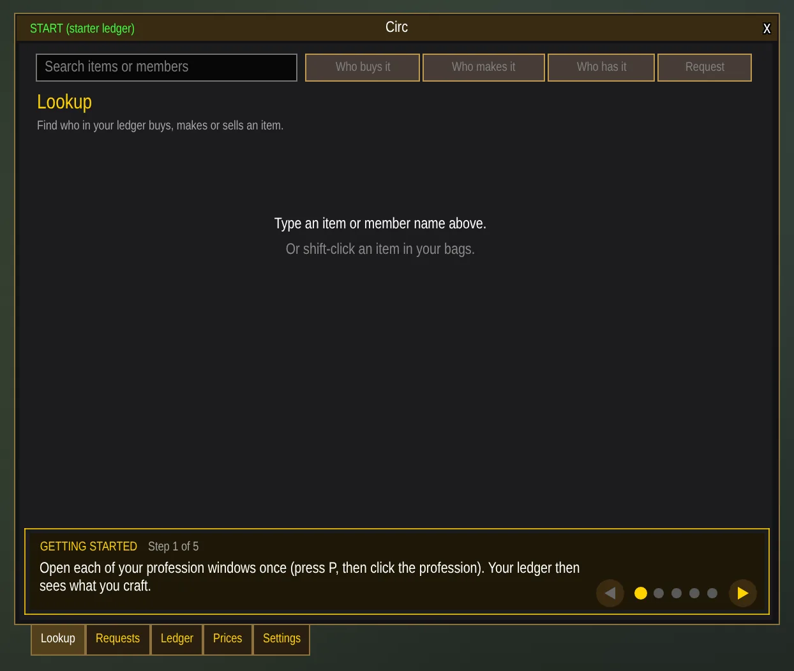
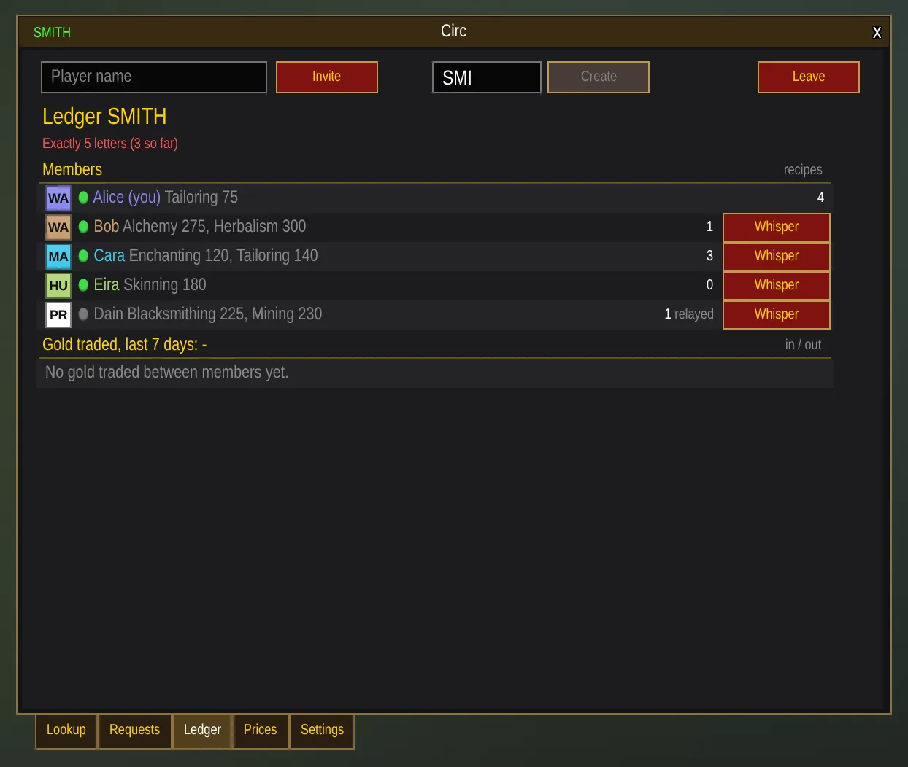
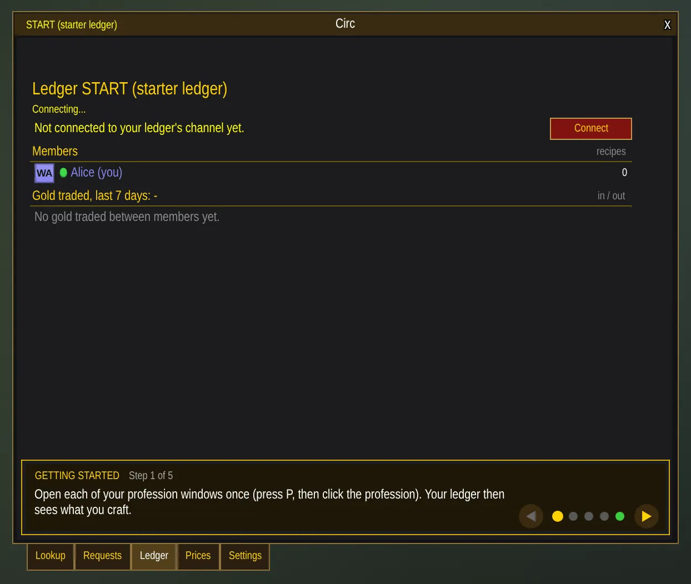
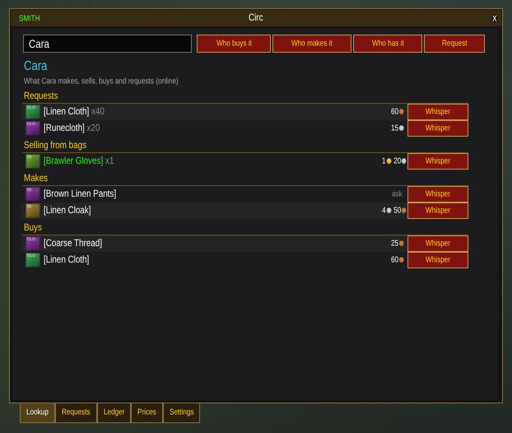
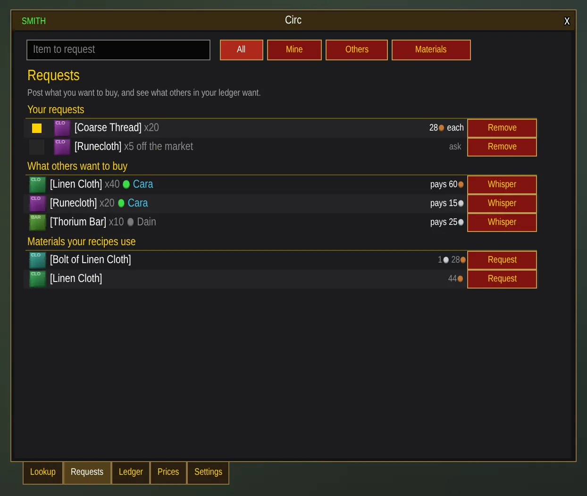
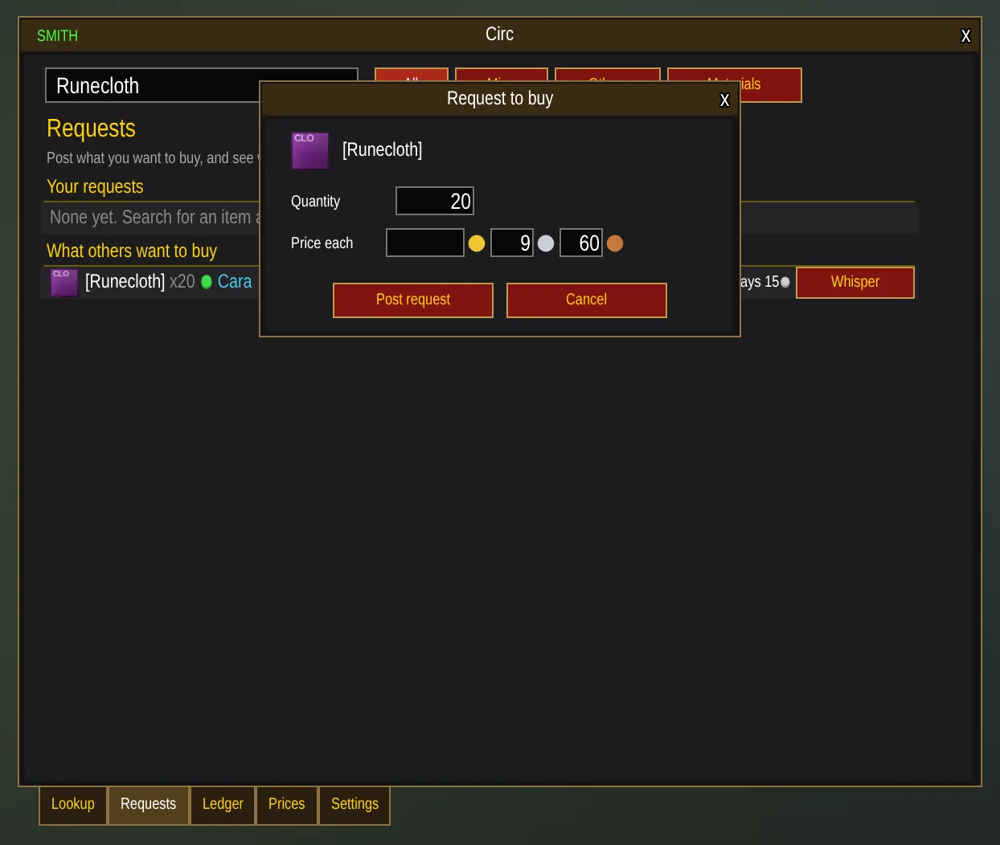
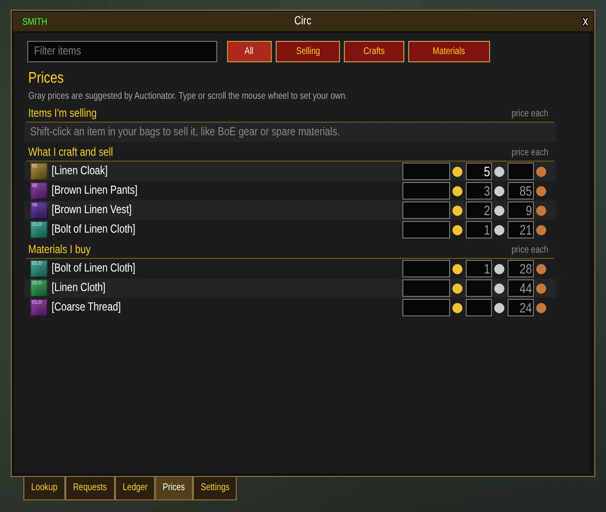
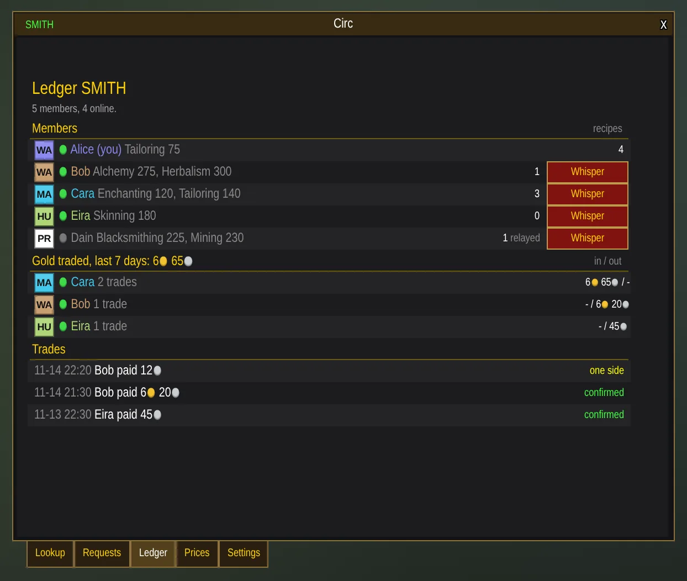
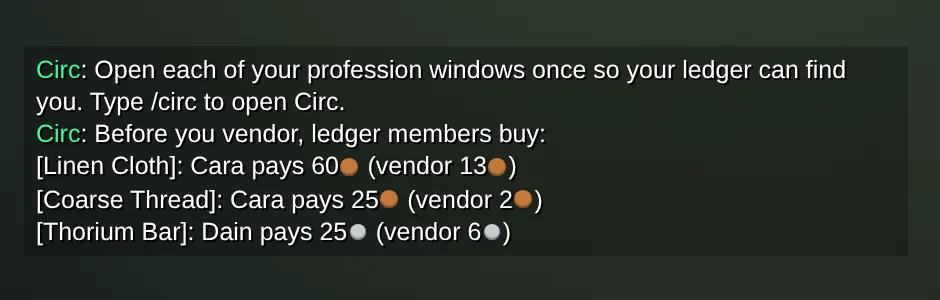
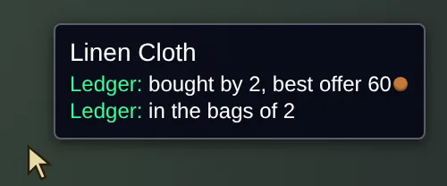

Getting started
For WoW Classic Era (1.15)
Circ opens by itself the first time you log in, with a getting-started bar along the bottom of the window. It shows one step at a time and ticks each off as you do it:
- Open each of your profession windows once, so your ledger sees what you craft.
- Look up an item to see who buys it or makes it.
- Check your prices.
- Post a request for something you need.
- Meet your ledger: who is in it and the gold you trade.

Use the arrows to look back at a step or skip ahead. When you're done, the bar goes away; you can bring it back on the Settings tab.
Ledgers
A ledger is a group of players who share what they make, buy and sell. Every member's Circ talks to the others through a hidden chat channel, so there's no server and nothing to sign up for.
Everyone starts in START, the starter ledger shared by every player on your realm and faction with Circ. It's a good way to see Circ working on day one. An account is in one ledger at a time, and your alts on the same account join it automatically.
Your own ledger
For a guild or a group of friends, make a ledger of your own. Turn on Ledger management under Settings > Advanced, then on the Ledger tab:
- Create a ledger with a 5-letter name, like SMITH. Creating one moves you out of START.
- Invite a player by name, or target them and press Invite. Their Circ asks them whether to join; they need Circ, must be online, and on your faction.
- Leave takes you back to START.

Connecting
After you log in, Circ can take up to two minutes to reach your ledger's channel. It keeps trying by itself, and again whenever you click in Circ. Until then the Ledger tab says so, with a Connect button.

If someone takes the channel
A ledger's channel is an ordinary chat channel underneath. If a stranger becomes its owner, sets a password or kicks members, Circ notices and offers to move the ledger to a new channel. Every member's Circ works out the same new channel, so everyone follows without having to talk about it. When the channel's owner logs out, Circ hands ownership to an established member.
Lookup
Type an item, or shift-click it in your bags, and pick what you want to know:
- Who buys it: members with a request out for it, or who pay for it as a material.
- Who makes it: crafters with the recipe, their skill and what they charge.
- Who has it: members selling it, and members carrying it in their bags.
Type a member's name instead to see everything they make, sell, buy and request. Every row has a Whisper button to start the conversation.

Every Classic Era recipe comes with Circ, so lookups know what an item is made from before anyone scans, but each crafter still opens their profession windows once so the ledger knows who makes what.
Requests
Post what you want to buy: an item, how many, and what you pay each. Members see it under What others want to buy, and on the item's tooltip.

Materials your recipes use lists what goes into your crafts with a Request button on each, so stocking up is one click.

Prices
The Prices tab holds what you charge for your crafts and what you pay for materials. With Auctionator, TSM or Aux
installed, Circ suggests prices in gray: materials at 80% of the Auction House price and crafts at the cost of
their materials plus 10%. Both can be changed on the Settings tab or with /circ pct and
/circ margin.
Type a price or scroll the mouse wheel over it to set your own. Leave one blank and buyers whisper you instead.

To sell something you don't craft, like BoE gear or spare materials, shift-click it in your bags. It stays listed while you carry it.
The Ledger tab
Who is in your ledger and online, with their professions; the gold you traded with each member over the last week; and every trade. Both sides of a trade report it, and an entry shows confirmed once the two reports match.

Members who were offline catch up on the trades they missed when they next log in.
Reminders and tooltips
Before you sell to a vendor or post an auction, Circ says so in chat if a ledger member pays more.

Item tooltips get Ledger lines: who buys it and the best offer, who sells it and from what price, who makes it, and who carries it.

Settings
Every part has a checkbox on the Settings tab, and changes apply right away:
- Show me in lookups: list your own crafts and requests when you look up an item.
- Vendor and Auction House reminders
- Ledger lines on item tooltips
- Minimap button
- Share my bags with my ledger
- Getting-started guide
- Suggested prices: the share of the Auction House price for materials, and the margin on crafts.
- Ledger management (Advanced): create, invite and leave.
Commands
| Command | What it does |
|---|---|
/circ | Open or close the window |
/circ find <item> | Look up an item |
/circ request <item> <qty> <price> | Post a request to buy; /circ unrequest <item> takes it down |
/circ buy <item> <price|off|auto> | What you pay for a material |
/circ sell <item> <price|off|auto> | What you charge for a craft |
/circ shop <item> [qty] | Shopping list: who makes it, and where to get its materials |
/circ pct <n> / /circ margin <n> | How suggested prices are worked out |
/circ create <NAME> | Start a ledger with a 5-letter name (needs Ledger management) |
/circ invite <player> | Invite a player to your ledger (needs Ledger management) |
/circ leave | Leave your ledger and go back to START (needs Ledger management) |
/circ reconnect | Reconnect to your ledger's channel |
/circ nudges, tooltip, minimap on|off | Turn the reminders, tooltip lines or minimap button on or off |
/circ help | List every command |
Prices can be written 1g20s, 35s, 80c or 1.5 (gold).
Known limits
- Reaching the ledger's channel can take up to two minutes after login.
- The bundled item and recipe names are English. Other languages work with your own scans; a crafter's skill level may be blank.
- The ledger's channel is hidden in Circ but still shows in the game's own channel list.